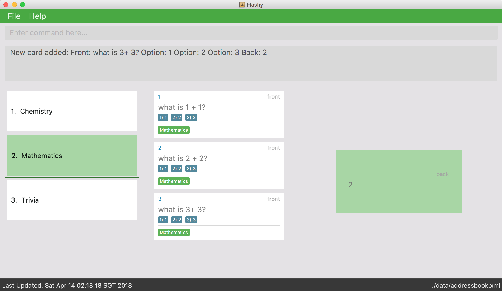

By: Flashy Since: Mar 2018 Licence: MIT
- 1. Introduction
- 2. Usage
- 3. Quick Start
- 4. Terminology
- 5. Features
- 6. FAQ
- 7. Command Summary
1. Introduction
Flashy, lightning fast flashcard management.
|
What are flashcards? Traditionally, physical flashcards are actual cards that people use to help memorise things. The front will have a question prompt and the back will have an answer. |
Physical cards are bulky and hard to search for. They are also very difficult to organise. Flashy is the result of our desire to eliminate these challenges that arise from the use of conventional flashcards. Flashy helps you organise your flashcards using its tagging system. By associating flashcards to different tags, Flashy is able to retrieve all flashcards of a given tag in a flash.
Studies have shown that spaced repetition is far more effective than regular studying. And we know studying is hard, thus we gave Flashy an intelligent scheduler to help space out your study sessions and make them more effective.
Spaced Repetition is the idea that spreading out study sessions is much more effective than cramming it over one night.
To learn more, head over to https://en.wikipedia.org/wiki/Spaced_repetition
|
Although Flashy is best suited for language learners, it is able to handle thousands of cards. Therefore, Flashy should prove useful for any student hoping to improve their flashcard organisation.
Flashy is optimized for those who prefer to work with a Command Line Interface (CLI) while still having the benefits of a Graphical User Interface (GUI). Fast typists will find that Flashy can get their flashcard management tasks done faster than traditional GUI apps.
Interested? Jump to the Section 3 to get started.
2. Usage
This document is made for users with varying level of technical proficiency in mind. As such most portions are stand alone with occasional references here and there.
To aid in your understanding of our product, we put in various scenario based uses together with instructions. So do not be afraid to read the manual!
Here are some common icons and their meaning:
| Extra information that you might want to know |
| Extra information that can be very helpful to you! |
| Important information. |
| Things that might potentially cause issues. |
3. Quick Start
We know your time is valuable; We like to do things efficiently too. Here are some things you need to get up and running.
3.1. Installation
-
Ensure you have Java version
1.8.0_60or later installed in your Computer.Having any Java 8 version is not enough.
This app will not work with earlier versions of Java 8. -
Download the latest
flashy.jarhere. -
Copy the file to the desktop.
-
Double-click the file to start the Flashy. The GUI should appear in a few seconds.
Typing helpand pressing Enter will open the help window. Refer to Section 5 for details of each command.
3.2. Usage
This is the most common usage scenario for our users. You probably want to know this as well.
4. Terminology
In Flashy, there are three different kinds of flashcards: normal, MCQ and fill-in-the-blanks.
Normal flashcards are simple question and answer cards with the question being at the front and answer at the back.
Fill-in-the-blanks flashcards are similar to normal flashcards, just that the question has blanks to prompt the users, and the back of the card has answers to the blanks.
MCQ flashcards allows you to provide different options as the answer, similar to an MCQ question, and the back will have the number for which option is the correct one.
In Flashy, flashcards are organised with tags. Tags are used to filter down the card list to a relevant subject. For example, a student studying multiple subjects can create tags for each subject.
Cards can have multiple tags.
(SHOW LABELLED UI PANEL)
5. Features
These are some of Flashy’s features to help you with your work!
5.1. How to read Command Format
This section will teach you how to use and interface with our application.
We write certain things with consistent formatting for example.
We hope to help users pick them out and understand how to use Flashy easily.
Let us walk you through the notation with our the command, addc
-
Words in
UPPER_CASEare parameters to be supplied by the user.
|
In |
-
Items in square brackets are optional.
|
|
-
Items with
…after them can be used multiple times including zero times.
|
|
-
Parameters can be specified be in any order.
|
If the command specifies |
To access this help guide at any time, type help into the command box and press Enter.
5.2. Managing Cards
The very first step to using Flashy is to populate Flashy with flashcards. After which we will proceed to use it to increase your mental capabilities. This section contains all the information you need to add, select, edit cards and more.
5.2.1. Selecting a flashcard: selectc
You can select a card that is currently being listed with the selectc command.
Format: selectc INDEX
Figure 1 shows where the index of a card can be found at:
Examples:
-
selectc 2
Selects the 2nd card in the list. -
select 1
Selects the 1st card in the list.
5.2.2. Adding a flashcard: addc
Adds a flashcard to Flashy. The presence of o/OPTION parameters will determine whether it is a normal or MCQ-type flashcard.
Format: addc f/FRONT b/BACK t/TAG or
addc f/FRONT o/OPTION o/OPTION .. b/BACK t/TAG
Ensure that the parameter for b/ falls between 1 the number of options inclusive.
|
Ensure that if there are blanks, the parameter for b/ should have the same number of answers (separated by ,) as there are blanks.
|
Examples:
-
addc f/What is the greatest flashcard application? b/Flashy t/Trivia
Adds a normal flashcard with the front and back of the first card beingWhat is the greatest flashcard application?andFlashyrespectively, as well as tagging it asTrivia. -
addc f/A square is a polygon with _ side meeting at _ angles. b/equal, right
Adds a fill-blanks card with the front and back of the card beingA square is a polygon with _ side meeting at _ angles.andequal, rightrespectively.
Note that a blank is denoted by a single underscore_. -
addc f/Which continent is Singapore in? o/Asia o/Africa o/Australia o/South America b/1
Adds a MCQ-type flashcard with the front beingWhich continent is Singapore in?, options includesAsia,Africa,AustraliaandSouth Americaand back being1.
|
A flashcard can have any number of tags (including 0). |
5.2.3. Editing a flashcard : editc
Edits an existing flashcard currently stored in Flashy.
Format: editc INDEX [f/FRONT] [o/OPTION] .. [b/BACK] [+t/TAG] [-t/TAG]
Examples:
-
editc 1 f/What is the greatest flashcard application? b/Flashy +t/Trivia
Edits the front and back of the 1st flashcard to beWhat is the greatest flashcard application?andFlashyrespectively, and also add a Trivia tag to it. -
editc 2 b/Lee Hsien Loong -t/Trivia
Edits the back of the 2nd flashcard to beLee Hsien Loong, and remove its tag Trivia. -
editc 1 o/Asia o/Australia o/Africa
Edits the options of the 1st flashcard to beAsia,AustraliaandAfrica. (Only if that flashcard is a MCQ flashcard).
| Ensure that the constraints on flashcard is not violated when editing. For constraints, refer to the Caution warning under Section 4.1.1: Adding a flashcard. |
5.2.4. Deleting a flashcard : deletec
Deletes the specified flashcard.
| If a tag no longer has associated flashcards, the tag will also be removed. Don’t be alarmed if some of your tags are also removed in the process! |
Format: deletec INDEX
Examples:
deletec 2
Deletes the 2nd flashcard in the list.
5.3. Managing Tags
Tags allow you to filter for cards that you want to quicky find that needle in the haystack. For example you might want to search for cards that are tagged with Mathematics, this section can help you with that.
5.3.1. Selecting a tag : select
Selects the tag identified by the index number. This will show only flashcards with the tag selected.
Format: select INDEX
Examples:
-
select 2
Selects the 2nd tag in the list. -
select 1
Selects the 1st tag in the list.
5.3.2. Filtering tags: find
Filters the tag list to contain those that match the search terms.
Format: find KEYWORD [MORE_KEYWORDS]
|
The search is case-insensitive, but finds exact partial matches to the tag name. |
Examples:
-
find biologywill show only tags matching the wordbiology. This will matchBiology,biology,biOlogy, andBiology Midterms, but notbio, orchemistry.
5.3.3. Clearing filters: list
The usage of list is 2-fold. list allows you to see all your flashcards and tags by clearing all filters. list
can also be invoked with an additional flag as list -t, to list all cards without tags. This allows you to reorganize
otherwise cards that are otherwise inaccessible.
Format: list [-t]
Examples:
-
list
Shows all tags and cards. -
list -t
Shows all tags, but shows only cards without tags.
5.3.4. Editing a tag : edit
Updates an existing tag to the specified values.
Format: edit INDEX n/TAG c/COLOR
Examples:
-
edit 1 n/French
Changes the name of the first tag in the list toFrench.
5.3.5. Deleting a Tag: delete
Deletes an existing tag. This will remove the tag from all cards that have the tag.
Examples:
-
delete 1deletes the first visible tag. -
delete 2deletes the second visible tag.
5.4. Using flashcards
After adding and managing your flashcards, its time to get your A+! This section will teach you how to let Flashy’s intelligent scheduling algorithm prompt you the best time to study!
5.4.1. Showing a flashcard : showdue
To study effectively, you have to know which cards are more worth it to read first.
Luckily Flashy’s intelligent scheduler takes care of these things for you.
showdue helps you filter out cards that are due by a certain date.
|
These dates are usually automatically scheduled by the Spaced Repetiton algorithm. You do not have to worry about scheduling yourself as Flashy will do it for you! But you could manually do it if you want to, take a look at the Schedule command. |
Format: showdue d/DAY m/MONTH y/YEAR
showdue can be used without any options, this will just show the flashcards due by today.You can omit some parameters in showdue. suppose today is 13/04/2018,
parameters that you omit would be implicitly assumed to be the current day, month or year.
If you key in showdue d/28 without typing in m/04 y/2018,
the month and year are assumed to be the current month.This would show you card due before 28/04/2018.
|
Examples:
-
showdue d/28 m/04 y/2018
Show cards due before 28/04/2018 -
showdue d/28
Suppose today is 13/04/2018, althoughm/04 y/2018is not typed, they are implicitly assumed to be the current month and year.
5.4.2. Answering flashcards: answer
After using showdue to show a list of flashcards, you have to select a card to answer.
You can select a card with the selectc command.
You can also simply click on the flashcard.
answer uses our Spaced Repetition algorithm to intelligently schedule the card to the right time in the future for review.
Format: answer c/CONFIDENCE_LEVEL
|
CONFIDENCE_LEVEL can only be 0, 1 or 2. Card must be selected first before answering. To learn how to select a card, take a look at selectc |
What does CONFIDENCE_LEVEL mean?
-
answer c/0Again
I don’t know the answer to this card. Card will then be requeued into the same session again. -
answer c/1Passable
I think I know the answer, but need more practice. Card will then be scheduled for the near future. To get more practice. -
answer c/2Easy A+
Card will then be scheduled further into the future. Other cards need more review than this one.
|
This gives feedback to the scheduler algorithm to automatically schedule the card for review at a time when it thinks you are likely to forget it. This design is based off the well known forgetting curve, you can read more about it here https://en.wikipedia.org/wiki/Forgetting_curve |
5.4.3. Show flashcards for review: Schedule
Using the answer command to answer a flashcard will automatically schedule the card based on our spaced repetition algorithm.
However, if you want to manually schedule a card for review by a certain date, you can do so as well.
Format: schedule d/DAY m/MONTH y/YEAR
| Card must be selected first before scheduling. To learn how to select a card, take a look at selectc |
schedule can be used without any options, this will just schedule the cards for today.You can omit some parameters in schedule. suppose today is 13/04/2018,
parameters that you omit would be implicitly assumed to be the current day, month or year.
If you key in schedule d/28 without typing in m/04 y/2018,
the month and year are assumed to be the current month.This would schedule the card for 28/04/2018.
|
Examples:
-
schedule d/28 m/04 y/2018
Schedule card for 28/04/2018 -
schedule d/28
Suppose today is 13/04/2018, althoughm/04 y/2018is not typed, they are implicitly assumed to be the current month and year.
5.5. Quality-of-Life features
Flashy has many features to speed up your workflow and make your experience as pain-free as possible.
5.5.1. Autocompletion
Instead of memorising the parameters of all the commands, you can instruct Flashy to automatically fill in the relevant parameters for you! After typing a valid command, simply press TAB and let Flashy handle the rest.
5.5.2. Clearing all data : clear
Rather than manually deleting cards and tags, Flashy is able to clear all of its data for you.
Format: clear
| This command will instruct Flashy to delete all tags and flashcards. Use this command with caution! |
5.5.3. Listing entered commands : history
If you lose track of the actions you have made at any point in time, you can ask Flashy to list them for you in reverse chronological order.
Format: history
|
You can also press the ↑ and ↓ arrows to display the previous and next input respectively in the command box. |
5.5.4. Undo and Redo
Flashy does not come built in with an eraser. To compensate for that, some commands support undoing and redoing. The commands are add, addc, addm, edit, editc, editm, delete, deletec, and clear.
Undoing previous command : undo
You can restore the state of Flashy’s card bank to its preious state before an undoable command was executed.
Format: undo
|
Undoable commands: those commands that modify the address book’s content ( |
Examples:
-
delete 1
list
undo(reverses thedelete 1command) -
select 1
list
undo
Theundocommand fails as there are no undoable commands executed previously. -
delete 1
clear
undo(reverses theclearcommand)
undo(reverses thedelete 1command)
Redoing the previously undone command : redo
Flashy can also revert any undo commands made by mistake!
Format: redo
Examples:
-
delete 1
undo(reverses thedelete 1command)
redo(reapplies thedelete 1command) -
delete 1
redo
Theredocommand fails as there are noundocommands executed previously. -
delete 1
clear
undo(reverses theclearcommand)
undo(reverses thedelete 1command)
redo(reapplies thedelete 1command)
redo(reapplies theclearcommand)
5.5.5. Exiting the program : exit or quit
Once you are confident in acing that exam, don’t forget to power down Flashy! When this is done, Flashy will save all changes made to its card bank before gracefully shutting down.
Format: exit or quit
5.6. Managing User Preferences
5.6.1. Changing the theme : theme
Flashy knows that not all study sessions occur during the day. When carrying out all-nighters, remember that you can always switch the theme of Flashy’s interface to match the lighting condition of your surroundings!
Format: theme t/THEME
| Flashy remembers your most recently used theme and will load it the next time you come back. |
Examples:
-
theme t/light -
theme t/dark
5.7. Saving the data
All data saved in Flashy’s card bank is saved in the hard disk automatically after any command that changes the data.
There is no need to save manually.
5.8. Encrypting data files [coming in v2.0]
{explain how the user can enable/disable data encryption}
6. FAQ
Q: How do I transfer my data to another Computer?
A: Install the app in the other computer and overwrite the empty data file it creates with the file that contains the data of your previous Flashy folder.
7. Command Summary
7.1. Cards
| Function | Command | Example |
|---|---|---|
Show Help Screen |
|
|
List all Flashcards and Tags |
|
|
Add Flashcard |
|
|
Edit Normal Flashcard |
|
|
Reveal Answer to Flashcard |
|
|
Schedule Flashcard |
|
|
7.2. Tags
Function |
Command |
Example |
Select Tag |
|
|
Filter Tags |
|
|
Edit Tag |
|
|
Delete Tag |
|
|
7.3. Others
| Function | Command | Example |
|---|---|---|
Undo a Command |
|
|
Redo a Command |
|
|
Clear Contents |
|
|
Change Theme |
|
|